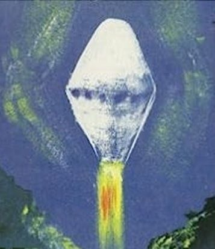
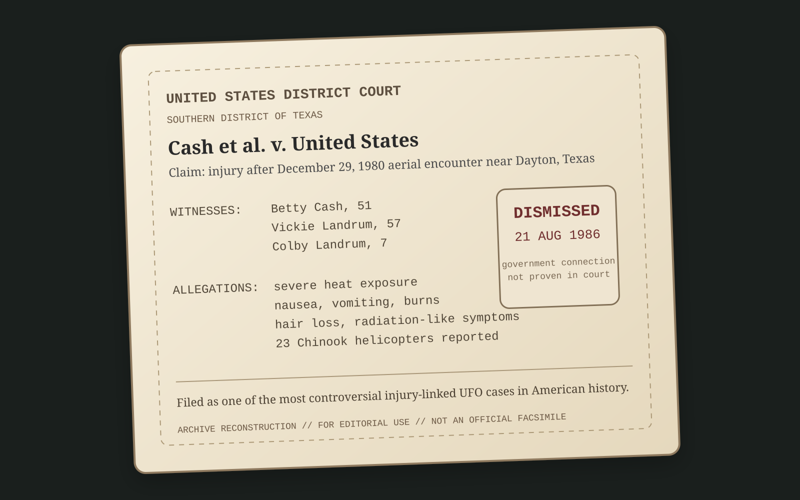

Zusammenfassung
Der Cash-Landrum-Zwischenfall spielt sich laut den bekannten Berichten am 29. Dezember 1980 auf einer Landstraße nahe Dayton, Texas, ab. Im Auto sitzen Betty Cash (51), Vickie Landrum (57) und Colby Landrum (7). Was als nächtliche Fahrt beginnt, kippt in einen Fall, der bis heute so verstörend wirkt, weil er nicht nur eine Sichtung liefert, sondern angeblich direkt in medizinische Schäden und einen Rechtsstreit mit der US-Regierung mündet.


Die Nacht des Vorfalls
Nach den zentralen Berichten sehen die drei Zeugen ein diamantförmiges UFO, das in niedriger Höhe über der Straße hängt oder sich langsam bewegt. Das Objekt soll unten Flammen ausgespien haben und eine extreme Hitze erzeugt haben. Betty Cash steigt Berichten zufolge sogar kurz aus dem Wagen aus und nähert sich der Szene weiter, obwohl die Temperatur bereits so brutal wirkt, dass Fahrzeug und Umgebung regelrecht aufgeheizt werden.
- Datum: 29. Dezember 1980
- Ort: Nähe Dayton, Texas
- Zeugen: Betty Cash, Vickie Landrum, Colby Landrum
- Form: Diamantförmig
- Effekt: Flammenausstoß und enorme Hitzeentwicklung
Die Chinook-Komponente
Besonders explosiv wird der Fall durch die Aussage, dass das Objekt zeitweise von 23 Chinook-Hubschraubern begleitet oder verfolgt worden sei. Für Believer ist genau das der Punkt, an dem die Akte von "seltsam" zu "möglicherweise vertuscht" springt. Wenn tatsächlich eine Formation militärischer Schwerlasthubschrauber in direkter Nähe war, stellt sich sofort die Frage: Wurde dort etwas begleitet, überwacht oder kontrolliert?
Bis heute gehört dieser Aspekt zu den umstrittensten Teilen des gesamten Falls, denn er öffnet die Tür für Theorien über geheime Tests, eine Regierungsbeteiligung oder eine Reaktion auf etwas, das außer Kontrolle geraten sein könnte.
Die körperlichen Folgen
Das eigentliche Gewicht des Cash-Landrum-Falls kommt von den gemeldeten Nachwirkungen. Die Beteiligten berichteten nicht einfach von Schock oder Angst, sondern von Symptomen, die in der UFO-Literatur immer wieder als Hinweis auf massive physische Einwirkung zitiert werden.
- Verbrennungen durch extreme Hitze
- Übelkeit und Erbrechen
- Schwäche und Schmerzen
- Haarausfall
- Symptome, die an Strahlenkrankheit erinnern
Vor allem bei Betty Cash wurden die gesundheitlichen Folgen als schwer beschrieben. Der Fall lebt deshalb nicht nur von Erzählung, sondern vom Eindruck, dass hier ein reales, körperliches Trauma zurückblieb.
Warum viele von Strahlung sprechen
Die Kombination aus Hitze, Übelkeit, Erbrechen, Hautschäden und Haarausfall ließ viele Beobachter vermuten, dass es sich nicht bloß um thermische Einwirkung, sondern möglicherweise um eine Art Strahlenexposition gehandelt haben könnte. Genau das macht die Akte so unangenehm, weil sie zwischen UFO-Mythos und medizinischer Katastrophe schwebt. Es gibt keinen allgemein akzeptierten Beweis für tatsächliche radioaktive Belastung, aber die geschilderten Symptome wurden oft genau in diese Richtung interpretiert.
Der juristische Schatten
Der Vorfall blieb nicht nur in Mystery-Kreisen. Die Betroffenen gingen juristisch gegen die US-Regierung vor, weil sie eine Verbindung zwischen dem Geschehen und militärischem Gerät oder militärischer Verantwortung vermuteten. Der Fall bekam dadurch eine zusätzliche Ebene: Wenn man vor Gericht zieht, geht es nicht mehr nur um Storytelling, sondern um Schuld, Beweisbarkeit und staatliche Verantwortung.
- Klage: gegen die US-Regierung
- Kernfrage: Gab es eine militärische Verbindung zu Objekt oder Helikoptern?
- Ausgang: Die Klage wurde am 21. August 1986 abgewiesen
Die Abweisung bedeutete nicht automatisch, dass "nichts passiert" war. Sie bedeutete vor allem, dass vor Gericht keine ausreichende Verbindung zur Regierung nachgewiesen werden konnte. Genau diese Lücke lässt bis heute Raum für Spekulation und Frust.
Der bittere Nachhall
Eine der makabersten Details dieser Akte ist die Lebenslinie von Betty Cash. Sie starb am 29. Dezember 1998, also exakt 18 Jahre nach dem Vorfall. Für Skeptiker ist das nur eine tragische Koinzidenz. Für viele Mystery-Fans wirkt dieses Datum wie der letzte schwarze Stempel auf einer ohnehin düsteren Geschichte.
Die skeptische Gegenoffensive
Natürlich blieb der Fall nicht unwidersprochen. Skeptische Autoren und Untersucher wie Philip J. Klass, Peter Brookesmith und später Brian Dunning griffen die Geschichte auf und versuchten, Widersprüche, Erinnerungsprobleme, medizinische Alternativen und logische Brüche herauszuarbeiten. Besonders die Zahl der Helikopter, die technische Plausibilität des Objekts und die Frage nach nachweisbarer Strahlung wurden immer wieder angegriffen.
Aber selbst dort, wo Skeptiker Zweifel säen, verschwindet der Kern des Falls nicht komplett. Genau darin liegt seine Kraft: Er bleibt unbequem. Zu schmutzig für eine einfache Heldengeschichte, aber auch zu heftig, um ihn locker als Fantasie abzutun.
Sourkraut-Briefing Fazit
Cash-Landrum ist nicht der sauberste UFO-Fall, aber vielleicht einer der verstörendsten. Ein diamantförmiges Objekt mit Flammen, 23 Chinooks am Himmel, Menschen mit Verbrennungen, Übelkeit, Erbrechen und Haarausfall, ein gescheiterter Prozess und eine Skeptikerfront, die zwar bohrt, aber das düstere Echo nie ganz beseitigt. Genau deshalb gehört Akte 005 in jede ernste Mystery-Sammlung: weil hier etwas passiert zu sein scheint, das niemand richtig erklären kann, aber auch niemand ganz loswird.